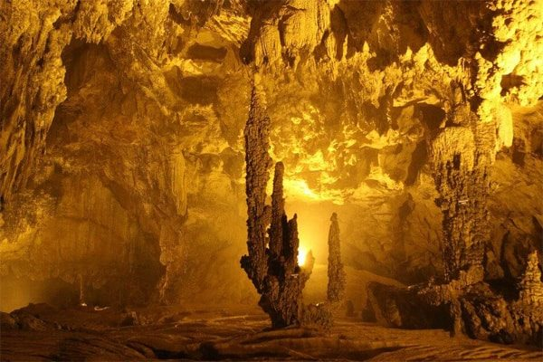
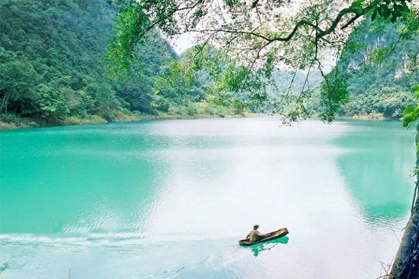
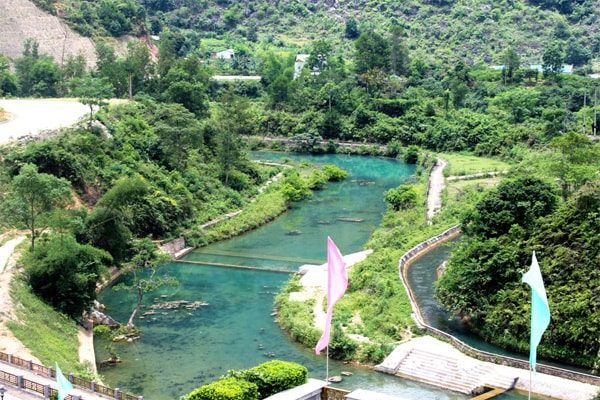
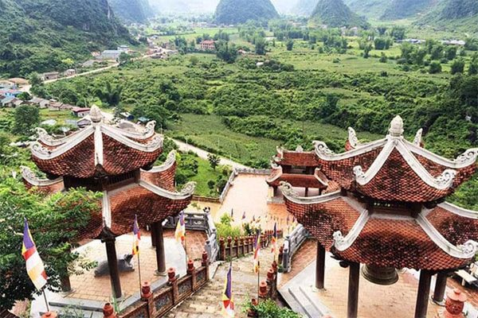
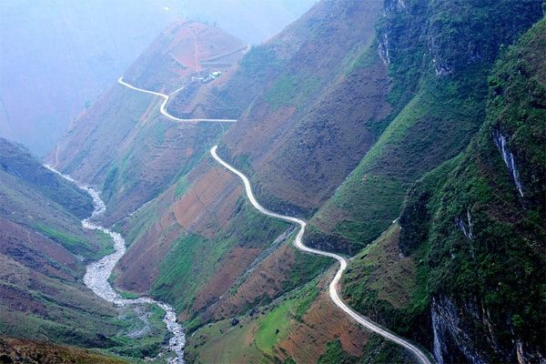
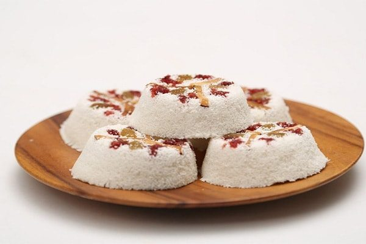
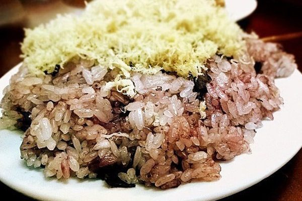
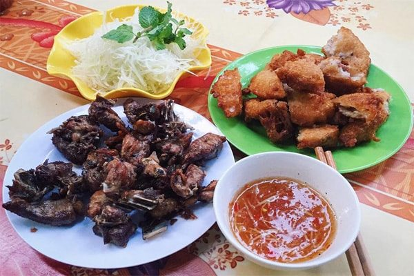
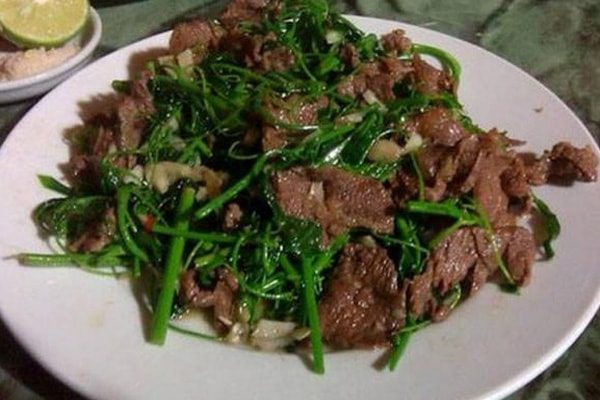

Cao Bằng là tỉnh miền núi ở phía đông bắc nước ta. Du lịch Cao Bằng nổi tiếng thu hút du khách bởi phong cảnh núi rừng hùng vĩ, phong cảnh hữu tình bên cạnh đó những địa danh như hang Pắc Pó hay suối Lê Nin là địa danh di tích lịch sử có ý nghĩa.
Để chuyến thăm quan của du khách được trọn vẹn, bạn nên chuẩn bị kỹ lưỡng hành trang cẩm nang kinh nghiệm cần thiết. Sau đây sẽ là kinh nghiệm cần thiết được chúng tôi tích luỹ được trong hành trình du lịch Cao Bằng, bạn hãy dành ít thời gian để đọc qua những dòng chia sẻ này nhé!
I. Giới Thiệu Tổng Quan Về Cao Bằng.
Cao Bằng có diện tích 6.700 km2, trung tâm là thành phố Cao Bằng, có 12 huyện thành là Bảo Lạc, Bảo Lâm, Hà Quảng, Thông Nông, Trà Lĩnh, Trùng Khánh, Nguyên Bình, Hoà An, Phục Hoà, Quảng Uyên, Hạ Lang và Thạch An.
Cao Bằng có đường biên giới phía đông với Trung Quốc. Địa hình hầu hết là núi non, giao thông hạn chế giữa các huyện trong tình. Nhiệt độ trung bình mùa hè từ 25 đến 28 độ c, mùa đông từ 16 đến 17 độ c. Một số vùng núi cao như Trà Lĩnh, Trùng Khánh có tuyết rơi vào mùa đông.
Dân tộc miền núi ở Cao Bằng phần lớn là người Tày, Nùng, Dao, H’Mông, Sán Chay.
II. Nên Đi Du Lịch Cao Bằng Vào Thời Gian Nào ?
Tuỳ theo sở thích của mỗi người có thể đến Cao Bằng nhiều thời điểm khác nhau. Theo kinh nghiệm chúng tôi, bạn có thể đến Cao Bằng vào tháng 8 – 9 để chiêm ngưỡng vẻ đẹp của thác Bản Giốc, một trong những ngọn thác đẹp nhất Việt Nam.
Nếu bạn muốn nhìn thấy những đoá hoa dã quỳ và hoa tam giác mạch nở rộ tại núi rừng hoang sơ có thể đến Cao Bằng vào tháng 11 – 12. Lúc này thời tiết se lạnh.
Nếu du khách đến Cao Bằng vào tháng 3 – 4 là mùa mơ, mận, sai trĩu quả, lúc này bạn có thể vừa thưởng thức trái cây ngon, ngọt vừa ngắm cảnh núi rừng.
III. Hướng Dẫn Đi Đến Cao Bằng.
Từ Hà Nội, du khách đến thành phố Cao Bằng theo quốc lộ 3 dài 280km. Bạn có thể du lịch Cao Bằng bằng xe khách. Mỗi ngày có tầm 3 chuyến xe Mỹ Đình – Cao Bằng khởi hành lúc tối. Giá vé từ 190k – 200k/vé.
Khi đến bến xe Cao Bằng, bạn có thể bắt xe đi từ Cao Bằng lên một số địa điểm du lịch như thác Bản Giốc, suối Lê Ninh…Nếu bạn muốn đến Trùng khánh thì cần đi quãng đường tầm 25km nữa.
Bạn có thể tham khảo một số hãng xe đang khai thác tuyến Hà Nội – Cao Bằng.
Xe Hải Vân: từ Hà Nội (024) 3722.3588
– Xe Hưng Thành: Từ Hà Nội, bến xe Mỹ Đình: 0972.222.694.
Tại Cao Bằng: 0989.481.481.
– Xe Khánh Toàn: 0915.660.062 – 0913.010.062.
– Xe Lương Sùng: 0912.455.915 – 0912.577.044.
– Xe Ngọc Hà: 0912.577.004 – 0912.455.915.
Hoặc bạn có thể lựa chọn giải pháp đi xe máy từ Hà Nội lên Cao Bằng cũng là một lựa chọn hấp dẫn đấy.
Nếu bạn ở phía Tây từ Hà Giang có thể theo tuyến đường 34, sẽ đi ngang các huyện lỵ Bảo Lâm, Bảo Lạc, xuống Nguyên Bình rồi qua thành phố Cao Bằng với đường dài khoảng 3/4 nội địa tỉnh.
Từ Tuyên Quang theo đường 176, lên nối tiếp với đoạn đường 34 của Hà Giang để qua Cao Bằng.
Du khách từ phía Nam từ Bắc Cạn theo quốc lộ 3, từ Lạng Sơn theo quốc lộ 4A, qua Thạch An, lên thành phố Cao Bằng.
IV. Khách Sạn Lý Tưởng Khi Du Lịch Cao Bằng.
Khi đến Cao Bằng, công việc đầu tiên của du khách thông thường là đến điểm dừng chân, nghỉ ngơi. Tại Cao Bằng có nhiều khách sạn giá rẻ, chất lượng phục vụ cho khách du lịch thập phương. Dưới đây là các khách sạn mà chúng tôi từng dừng chân, giá cả cũng như phong cách phục vụ tốt bạn có thể tham khảo.
1. Sunny Hotel.
Là khách sạn được thiết kế theo chuẩn 3 sao. Toạ lạc tại địa chỉ số 40 đường Kim Đồng, tp Cao Bằng. Nếu bạn có ý định khám phá Cao Bằng thì đây là khách sạn lý tưởng, thích hợp cho việc thăm quan của các bạn. Từ đây đến những khu vui chơi, giải trí khá gần. Khách sạn này cách sông Lương Bằng và cầu Bằng Giang 150m.
2. Jeanne Hotel.
Là một khách sạn theo tiêu chuẩn 2 sao, toạ lạc tại số 99 đường Kim Đồng, phường Hợp Giang, tp Cao Bằng. Vị trí thuận lợi cho việc đi đến các điểm du lịch Cao Bằng. Nhiều du khách thích chọn khách sạn này bởi sự tiện ích việc đi lại, khách sạn được dọn dẹp sạch sẽ, dịch vụ chăm sóc khách cư trú chu đáo…
3. Khách sạn Á Đông Cao Bằng.
Khách sạn toạ lạc địa chỉ tổ 6, phường Ngọc Xuân, tp Cao Bằng. Được thiết kế theo chuẩn 2 sao. Với vị trí này thuận lợi cho việc khám phá Cao Bằng. Từ đây du khách có thể đi đến những thắng cảnh nổi tiếng như Hang Pắc Pó, Thác Bản Giốc, rừng Trần Hưng Đạo, cổng trời… một cách dễ dàng.
V. Hướng Dẫn Đi Lại Tại Cao Bằng.
Hiện Cao Bằng đang được đầu tư phát triển hạ tầng phục vụ cho việc đi lại thăm quan của du khách. Bạn có thể sử dụng nhiều phương tiện khác nhau để đi lại tại nơi đây như thuê xe máy, ô tô. Du khách có thể liên hệ với phòng lễ tân khách sạn để thuê xe máy, ô tô để đi lại.
Taxi: Hiện ở Cao Bằng có một số hãng taxi uy tín đang hoạt động, du khách có thể liên hệ 1 trong các hãng sau:
Taxi Đức Ngọc Cao Bằng: Số điện thoại: 0206.3.79.79.79;
Taxi Việt Vịnh Cao Bằng: Số điện thoại: 0206.3.851.851;
Taxi Hợp Thành: Số điện thoại: 0206.3.76.76.76;
Taxi Hương Sen Cao Bằng: Số điện thoại: 0206.3.82.82.82;
Taxi Bảo Trâm Cao Bằng: Số điện thoại: 0206.3.850.850;
Taxi Mai Linh Cao Bằng: Số điện thoại: 0206.6.85.85.85;
Taxi Sao Mai Cao Bằng: Số điên thoại: 0263.851.851;
VI. Những Địa Điểm Du lịch Cao Bằng Không Thể Bỏ Qua.
Sau khi đã có được nơi ăn, chốn nghỉ ngơi ổn định, du khách có thể hành trình khám phá Cao Bằng. Sau đây là một số những điểm thăm quan hấp dẫn không thể bỏ qua.
1. Thác Bản Giốc.
Là một trong những thác nước hùng vĩ đẹp nhất tại nước ta. Thác nằm trên sông Quây Sơn tại biên giới Việt Nam và Trung Quốc, ở xã Đàm Thuỷ, huyện Trùng Khánh tỉnh Cao Bằng.
Khi du khách du lịch Cao Bằng thác Bản Giốc thường là địa điểm đến của hành trình đầu tiên. Thác mang vẻ đẹp hùng vĩ, giữa một không gian hoang sơ. Nước cuồn cuộn tuôn trào ngày đêm, từ trên độ cao 30m đổ xuống những tảng đá vôi, cùng những bậc thang tự nhiên tựa như một dãi lụa trắng xoá, hơi nước tung tựa nên khung cảnh huyền ảo của một vùng.
Khi đến với thác Bản Giốc trong những ngày nắng đẹp, dãi lụa tạo nên trở nên huyền ảo hơn, đôi lúc du khách sẽ nhìn thấy cảnh tượng cầu vồng rực rỡ. Khi nước chảy đến chân thác hình thành nên dòng nước phẳng lặn, trải dài, trong xanh như một tấm gương soi, in bóng cả núi non, thảm cỏ, rừng xanh Cao Bằng, tạo nên một khung cảnh tựa chốn bồng lai tiên cảnh.
2. Động Ngườm Ngao.

Là một hang động cực đẹp nằm tại xã Đàm Thuỷ, huyện Trùng Khánh, tỉnh Cao Bằng, cách thác Bản Giốc 3km. Chiều dài động Ngườm Ngao 2km, có 3 cổng chính là Ngườm Ngao, Ngườm Lồm và Bản Thôn. Theo tiếng dân tộc Tày, “Ngườm” là hang động, “Ngao” là hổ ghép lại có nghĩa là hang hổ. Hang động này thu hút hàng ngàn khách du lịch Cao Bằng ghé thăm hàng năm.
Bạn sẽ thấy choáng khi đi vào bên trong hang động bởi vẻ đẹp huyền ảo và ấn tượng của những lớp thạch nhũ hình thù độc lạ, những cây thạch nhũ được kéo dài xuống từ trên cao đọng những giọt nước ngầm trở nên lấp lánh, vàng rực tạo nên cảnh quang vô cùng sinh động huyền bí gây sự cuốn hút du khách.
3. Hồ Thang Hen

Là một hồ nước hình thoi, vị trí kỳ lạ nằm ở độ cao hàng ngàn mét so với mực nước biển, tại xã Quốc Toản, huyện Trà Lĩnh, tỉnh Cao Bằng. Hồ Thang Hen có diện tích tầm 5000m2. Nhiều du khách khi đến với Cao Bằng thường hay ghé thăm quan hồ Thang Hen để được du ngoạn cảnh đẹp.
Hồ nằm gọn trong lòng núi, được cánh rừng xanh mướt bao phủ. Tên tiếng tay ý nghĩa của tên hồ là “đuôi ong”. Khi nhìn từ trên cao xuống thì hồ tựa như đuôi con ong. Khi thăm quan hồ du khách sẽ thấy được cảnh tượng những cành cây vươn mình cheo leo trên vách núi in bóng xuống mặt hồ phẳng lặn, tựa như bức tranh sơn thuỷ hữu tình. Hồ được ví như một “tuyệt tình cốc” tại Cao Bằng. Đầu nguồn là một hang rộng, nước chảy tuôn trào ngày đêm. Nhiều người thích đến đây bởi nước ở đây lúc nào cũng trong xanh bất kể là mùa nào.
4. Di Tích Pắc Bó, Suối Lê Nin.

Di tích Pắc Bó Cao Bằng ở xã Trường Hà, huyện Quảng Hà, nằm sát đường biên giới Việt – Trung. Đường Hồ Chí Minh có điểm đầu trọng yếu xuyên quốc gia sẽ khởi đầu từ đây, cùng với việc xây dựng một cửa khẩu mới thông thương với nước bạn.
“Pắc Bó” có nghĩa là “Miệng nguồn”. Tại đây có hang Cốc Bó được chủ tịch Hồ Chí Minh chọn làm nơi ở sau 30 năm hoạt động ở nước ngoài trở về tổ quốc ngày 8/2/1941. Trong hang Cốc Bó có một nhũ đá được người đặt tên là Các Mác. Tại đây còn lưu giữ một tấm gỗ là giường nằm của Bác Hồ.
Dưới chân núi trước cửa hang có dòng suối, người ta đặt tên là suối Lê Ninh. Cách hang Cốc Bó khoảng 1000m là lán Khuổi Nậm, nơi Bác Hồ đã chủ trì hội nghị lần thứ 8 của Trung ương Đảng Cộng sản Đông Dương vào tháng 5/1941. Pắc Pó trở thành một địa điểm di tích thiêng liêng của cách mạng Việt Nam. Cảnh quan nơi đây rất đẹp và Pắc Pó được nhiều du khách đến thăm viếng mỗi khi có dịp đến Cao Bằng.
5. Chùa Phật Tích Trúc Lâm Bản Giốc

Là một ngôi chùa đầu tiên được xây dựng nơi biên thuỳ phía Bắc nước ta với kinh phí của tỉnh. Chùa nằm trên ngọn núi phia Nhằm, xã Đàm Thuỷ huyện Trùng Khánh, cách bản Giốc 500m. Có kiến trúc độc lạ nên được chọn làm điểm thăm quan của nhiều du khách khi du lịch Cao Bằng.
6. Làng Rèn Phúc Sen.
Là nơi sinh sống của người dân tộc Nùng An, nghề rèn chính là ngành nghề truyền thống dân tộc nơi đây. Làng nghề thuộc xã Phúc Sen huyện Quảng Uyên. Với những nét văn hoá độc đáo của làng nghề rèn đã trở thành điểm thu hút khách du lịch thăm quan, giúp bà con nơi Phúc Sen có thêm nguồn thu nhập để nâng cao đời sống.
7. Đèo Mã Phúc.

Là một ngọn đèo đẹp nhất nằm trên trục QL3 giữa ranh giới của huyện Hoà An và Trà Lĩnh, tại đèo Mã Phúc, du khách có thể đi thêm một đoạn để đến cửa khẩu Tà Nùng, thăm quan nước bạn.
Để chinh phục được đỉnh đèo du khách phải đi qua 7 vòng dốc, con đường nơi đây hẹp quanh co, và là điểm mà nhiều bạn phượt thủ yêu thích phiêu lưu mạo hiểm.
8. Cửa Khẩu Quốc Tế Cao Bằng – Trung Quốc.
Hiện tỉnh Cao Bằng có 5 cửa khẩu thông thương với Trung Quốc đó là: cửa khẩu Trà Lĩnh, Pò Peo, Lý Vạn, Sóc Giang, Tà Lùng. Trong đó cửa khẩu Tà Lùng là nổi tiếng nhất.
Tà Lùng là cửa khẩu quốc tế tại bản Pò Tập, thị trấn Tà Lùng, huyện Phục Hoà, tỉnh Cao Bằng. Tà Lùng là điểm cuối quốc lộ 3, nối tiếp cầu Thuỷ Khẩu sông Bắc Vọng, thông thương đến cửa khẩu Thuỷ Khẩu của tỉnh Quảng Tây, Trung Quốc, đây được xem là cửa khẩu chính để giao lưu kinh tế Cao Bằng với nước bạn. Nhiều du khách thích thú khi được đến cửa khẩu để check – in chụp hình lưu lại khoảnh khắc đẹp nhất trong hành trình.
9. Đền Xuân Lĩnh.
Toạ lạc tại huyện Thạch An, tỉnh Cao Bằng. Đền thờ Trần Quyết, người trong huyện. Năm 1682, ông làm tướng tiên phong đi đánh nhà Mạc, bị trọng thương chết tại trận, được phong làm Phúc Thần, tên hiệu là Kỳ Lịch Đại Vương, dân bản dựng đền thờ ông.
VII. Đặc Sản Cao Bằng.
Trong hành trình du lịch Cao Bằng được thưởng thức những món ăn ngon là điều được nhiều người mong ước. Dưới đây là một số món đặc sản Cao Bằng được nhiều du khách yêu thích.
1. Bánh khảo

Là món ăn đặc trưng của Cao Bằng. Từ những nguyên liệu đời thường như bột gạo nếp, thịt mỡ, lạc rang làm nhân trải qua quá trình chế biến truyền thống tạo thành món bánh khảo thơm ngon. Từ lâu bánh khảo đã trở thành đặc sản Cao Bằng có sức hút mạnh mẽ trong cộng đồng phượt thủ, có dịp bạn nhất định phải nếm thử nhé.
2. Xôi Trám Cao Bằng.

Quả trám là một trái cây mọc nhiều ở miền núi phía Bắc nước ta. Bạn có thể tìm và thưởng thức những quả ngọn tại tỉnh Cao Bằng đặc biệt là món xôi trám thì càng hấp dẫn hơn.
Vào mùa thu ngừoi dân tộc Tày, Nùng ở Cao Bằng lên rừng hái trám khi du lịch Cao Bằng đúng dịp này bạn sẽ được thưởng thức những món ăn ngon được chế biến từ quả trám đặc biệt là món xôi trám.
3. Bánh Áp Chao.

Là món bánh đặc trưng chỉ có tại Cao Bằng. Khi người dân nơi đây xa quê thì rất nhớ món bánh Áp Chao. Nguyên liệu chế biến khá đơn giản thành phần gồm hũ bột, nêm gia vị, lấy khuôn đong từng đọt bột, chuẩn bị chảo đổ dầu ăn, nhúng nguyên liệu vào chảo, cùng với một số phụ gia, rau thơm
4. Rau Dạ Hiến.

Là một loại rau hoang dại mọc ở vùng núi đá phía Bắc. Rau còn có tên là bồ khai. rau dạ hiến rất giòn, dễ gãy. Khi ăn mùi vị rất đặc biệt hấp dẫn nên trở thành đặc sản Cao Bằng. Vào những dịp lễ, các mùa trong năm tại Cao Bằng món rau dạ hiến được xào với thịt bò, lòng lợn, lòng gà khi ăn sẽ làm cho món ăn tăng phần khẩu vị và ngon ngọt hơn.
Ngoài ra Cao Bằng có còn nhiều địa danh du lịch hấp dẫn và những món ăn đặc sắc khác đang chờ quý khách đến khám phá, hãy đồng hành du lịch Cao Bằng với chúng tôi nhé!